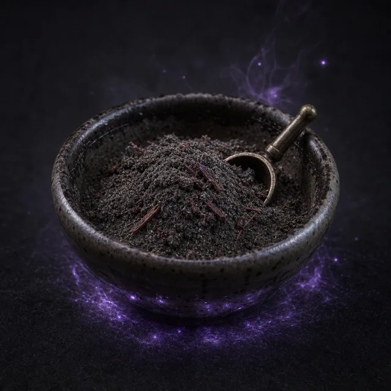

Расходник · Wondrous Loot · №42
Когда вы вдыхаете этот порошок, вы добавляете d8 к следующему броску действия, но на время сцены при получении урона или при виде гибели вы должны преуспеть в Броске Реакции Влияния (14) или стать Оглушённым. Пока вы Оглушены, вы не можете использовать реакции и совершать другие действия, пока не снимете это состояние.
Улучшается до: Порошок Героя
Открыть в генераторе лута